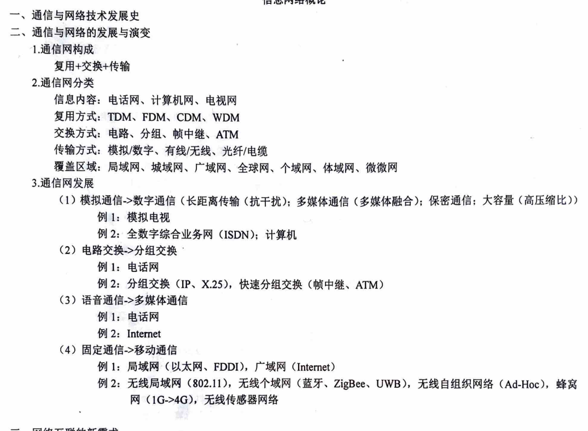
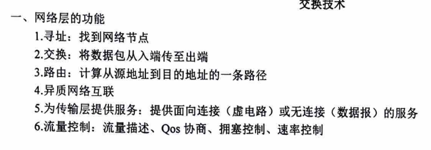
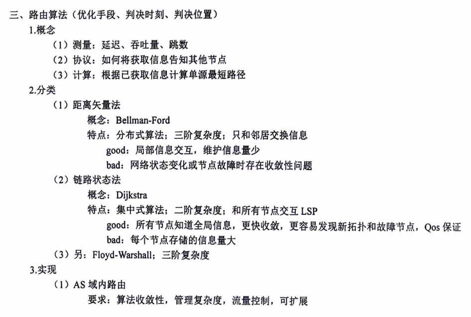
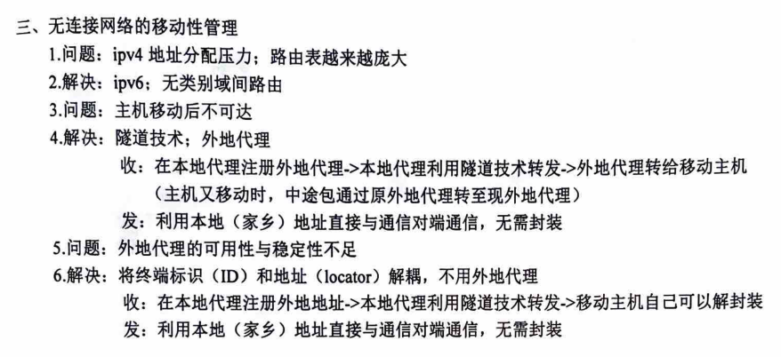
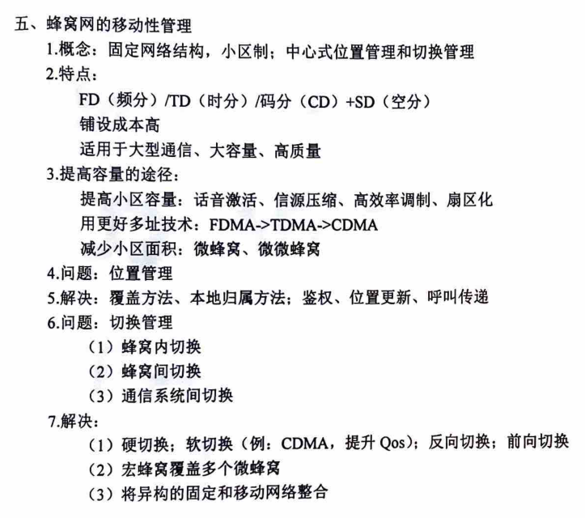
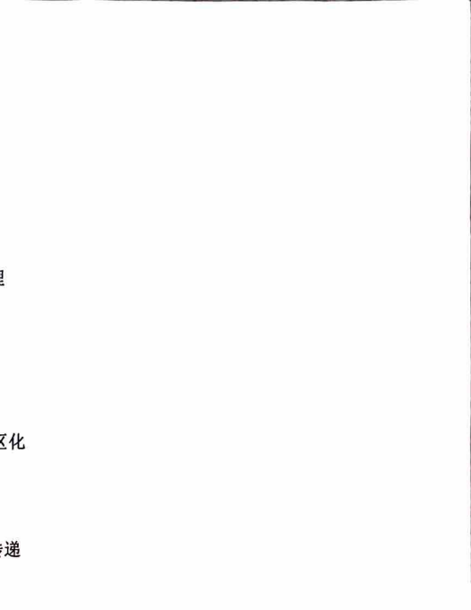

### Chapter: Overview of Information Networks
#### I. Communication and Network Technology Development
#### II. Communication and Network Development and Evolution
1. **Communication Network Composition** - Multiplexing + Switching + Transmission
2. **Communication Network Classification** - Information Content: Telephone Network, Computer Network, Television Network - Multiplexing Methods: TDM, FDM, CDM, WDM - Switching Methods: Circuit, Packet, Frame Relay, ATM - Transmission Methods: Analog/Digital, Wired/Wireless, Fiber Optic/Cable - Coverage Areas: Local Area Network, Metropolitan Area Network, Wide Area Network, Internet, Personal Area Network, Body Area Network, Micro Network
3. **Communication Network Development** - (1) Analog Communication -> Digital Communication (Long-Distance Transmission,抗干扰); Multimedia Communication (Multimedia Integration); Confidential Communication; High-Capacity (High Compression Ratio) - Example 1: Analog Television - Example 2: Integrated Services Digital Network (ISDN); Computer - (2) Circuit Switching -> Packet Switching - Example 1: Telephone Network - Example 2: Packet Switching (IP, X.25), Fast Packet Switching (Frame Relay, ATM) - (3) Voice Communication -> Multimedia Communication - Example 1: Telephone Network - Example 2: Internet - (4) Fixed Communication -> Mobile Communication - Example 1: Local Area Network (Ethernet, FDDI), Wide Area Network (Internet) - Example 2: Wireless Local Area Network (802.11), Wireless Personal Area Network (Bluetooth, ZigBee, UWB), Wireless Ad-Hoc Network (Ad-Hoc),蜂窝网 (1G->4G), Wireless Sensor Network
#### III. New Requirements for Network Interconnection
1. **Development Directions:** - Interconnection of Heterogeneous Networks; Network Scalability; Network Reliability; Network Security - Information: Multimedia, Mobility - Switching: High-Speed, Flexible - Transmission: Digital, High-Speed - Network: Integrated, Intelligent, Personalized 2. **Constraints:** - Energy Consumption

### Communication Services Basic Characteristics and Network Layering Model
#### 1. Communication Service Characteristics Description
1.1 Communication Service Classification
(1) By Service Type - User Information: Voice, Video, Image, Data - Control Information: Signaling, Network Management
(2) By Service Content - Voice, Video, Image, Data
(3) By Service Mode - End-to-End: Connection-Oriented, Connectionless - Service Generation Characteristics: Periodic, Random, Burst - Bandwidth: Constant Bit Rate (CBR), Variable Bit Rate (VBR), Available Bit Rate (ABR), Unspecified Bit Rate (UBR)
(4) By QoS - Real-time Services: Circuit Switching - Effectiveness: Occupies Bandwidth, Low Latency -> Dynamic Bandwidth Adjustment - Reliability: Lossless -> Increase Connection Rate - Non-real-time Services: Packet Switching - Effectiveness: Packet Transmission Efficiently Utilizes Bandwidth -> Reduce Latency, Increase Throughput - Reliability: Lossy
2. Communication Service Performance Requirements
(1) Basic Requirements - Effectiveness: Connectivity (Anytime, Anywhere), Cost-Effectiveness, Flexibility (Robustness), Scalability (应对规模扩展) - Reliability: Resilience to Single Point Failure and Traffic Attacks
(2) Special Requirements - Voice (Effectiveness) Delay Jitter: Very Small - (Reliability) Tolerates Loss: Some - Data (Effectiveness) Delay Jitter: As Small as Possible - (Reliability) Tolerates Loss: Not Tolerated - Image (Effectiveness) Delay Jitter: Very Small - (Reliability) Tolerates Loss: Very Small - Multimedia: Effectiveness + Reliability
3. Factors Affecting Communication Network Performance (1) Network Available Resources (Physical Layer): Bandwidth, Buffering, Power (2) Network Topology Structure (Link Layer): Load Balancing, Energy Efficiency (3) Network Routing Mechanism (Network Layer): Signaling and Advertisement (4) Network Traffic Control (Transport Layer): Congestion Control (5) Network Service Mode (Application Layer): Randomness (Network Performance Degradation Main Cause, Such as Bursty Packet Switching)
#### 2. Communication Network Layering Model and Cross-Layer Design
Cross-layer design's necessity: Improve network resource utilization, global optimization
### Chapter: Channel Sharing and Multiple Access Techniques
#### I. Basic Principles of Digital Communication and Physical Interfaces
1. **Source:** - (1) Sampling: Nyquist Sampling - (2) Quantization: Analog-to-digital conversion, reducing quantization noise, logarithmic compression - (3) Encoding: Source Coding (data compression), Channel Coding (error detection and correction) - (4) Modulation: For multiplexing and multiple access
2. **Channel:** - (1) Wired Channels: Twisted Pair, Coaxial Cable, Fiber Optics - (2) Wireless Channels: Shortwave, Ground Microwave Relay, Satellite
**Problems:** - 1) Fading (Multipath & Time Delay) <--- Direct, Reflection, Scattering, Diffraction - Time Delay Spread: Frequency Selective Fading - Frequency Spread: Time Selective Fading - Angle Spread: Spatial Selective Fading - 2) Time Variation (Time Delay & Doppler) <--- Motion - Solution: Diversity (Orthogonal Space)!!
3. **Protocol:** Automatic Repeat Request (ARQ)
#### II. Multiplexing & Multiple Access
1. **Multiplexing:** - (1) Concept: Single user in the transmission end has exclusive access to the channel - (2) Reasons: Efficient resource utilization; Random and economic resource demand; Can tolerate delays - (3) Categories: Fixed Multiplexing; Statistical Multiplexing
2. **Multiple Access:** - (1) Concept: Multiple users share the channel resources - (2) Reasons: Shared medium (usually uplink) - (3) Categories: Competitive Multiple Access; Coordinated Multiple Access
3. **Fixed Multiplexing and Coordinated Multiple Access:** - (1) Concept: - Fixed Multiplexing: Fixed channel division and fixed use - Coordinated Multiple Access: Users obtain independent channel resources through orthogonal division within the domain - (2) Characteristics: - Fixed Multiplexing: High efficiency, needs synchronization; Suitable for streaming media - Coordinated Multiple Access: Good scalability; Suitable for heavy load networks - (3) Categories: - 1) Frequency Division Multiplexing (FDM) & Frequency Division Multiple Access (FDMA) - FDM: Examples: Asymmetric Digital Subscriber Line (ADSL), Wavelength Division Multiplexing (WDM) - FDMA: Example: American AMPS - Concept: Users share the frequency spectrum - Characteristics: - Symbol period is much longer than the delay; Low user capacity; No equalization required - Needs a bandpass filter;
2) Time Division Multiplexing (TDM) & Time Division Multiple Access (TDMA)
TDM: Example: Synchronous Digital Hierarchy (SDH), Synchronous Optical Network (SONET)
TDMA: Example: Integrated Services Digital Network (ISDN)
Concept: Users share time slots
Features: - Symbol period depends on bandwidth and modulation technology; user capacity is higher than FDMA; needs equalization - Requires switches for group transmission - Has protection time slots and synchronization time slots
3) Code Division Multiple Access (CDMA) & Code Division Multiple Access (CDMA) & Interleaved Multiple Access (IDMA)
CDM:
CDMA: Example: 3G
Concept: Users distinguish through different spreading sequences (code orthogonal) --抗随机错误; - Users spread in the time domain --抗突发错误
Features: User capacity is higher than TDMA;
IDMA:
Concept: Users distinguish through different interleaving sequences (code uncorrelated) --区分
Features: Users do not distinguish through spreading sequences
4) Orthogonal Frequency Division Multiplexing (OFDM) & Orthogonal Frequency Division Multiple Access (OFDMA): Orthogonal Frequency Division
OFDM: Example: WLAN
OFDMA: Example: 3G-LTE, 4G
Concept: QAM (orthogonal) + FD (frequency division)
Features: - User capacity is higher than CDMA; - Reduces multipath interference (channel fading becomes flat); reduces adjacent channel interference (code element duration increases)
5) Space Division Multiple Access (SDMA) and Space Division Multiple Access (SDMA)
SDM:
SDMA: Example: TD-SCDMA, optical space division
Concept: Users are separated in space
Features: - Can be used with any modulation method, combined with the aforementioned multiple access technologies - Requires directional antennas, multi-beam antennas, MIMO (multiple input multiple output)
4. Statistical Multiplexing and Competitive Multiple Access
(1) Concept: - Statistical Multiplexing: Fixed channel division, not fixed usage - Competitive Multiple Access: Users obtain channel resources through non-coordinated or partial coordination
(2) Features: - Statistical Multiplexing: Has labels, no synchronization; suitable for bursty traffic - Competitive Multiple Access: Simple, poor scalability; suitable for lightly loaded local area networks
(3) Classification: 1) Non-coordinated: Asynchronous Time Division Multiplexing (ATDM): Asynchronous Asynchronous - Example: ATM - Features: Only applicable to packet networks, fixed packet length 2) Non-coordinated: Pure Competitive Access Technology (ALOHA with Time Slot ALOHA) - Example: Pure ALOHA -> Time Slot ALOHA -> Carrier Sense Multiple Access with Collision Detection (CSMA/CD)
### Features: - Simple protocol; no synchronization; low throughput; interframe ALOHA throughput is twice that of pure ALOHA.
3) Non-coordinated: Carrier Sense Multiple Access with Collision Avoidance (CSMA)
Example: 0坚持: Listen to the collision, wait for a random time before listening again, and transmit when idle. p坚持: Listen to the collision, continue listening, and transmit with probability p when idle. 1坚持: Listen to the collision, continue listening, and transmit with probability 1 when idle.
Classification: - Collision Detection (CD): Example: LAN Concept: Detect the collision immediately and notify, cannot avoid. - Collision Avoidance (CA): Example: WLAN Concept: Avoid collisions during transmission, try to avoid collisions.
Problems: - Hidden Node Problem: The sender does not detect the collision (A: Transmitting --- B: Receiving --- C: Hidden Node) - Exposed Node Problem: The receiver incorrectly assumes there is a collision (A: Receiving --- B: Transmitting --- C: Exposed Node) Solution: RTS (request to send) / CTS (clear to send) coordination mechanism.
Features: - Terminals that do not receive an acknowledgment within the specified time will experience a collision. - The higher the number of nodes, the lower the channel utilization; the longer the data packet, the higher the channel utilization.
4) Partial Coordination: Round-Robin Access, Reservation Access, etc. Example: Token Ring, Bit-Map Method.
### Repeat Use Technique: Example: ATM edge router Concept: Divide an information flow into multiple parallel streams, each transmitted through a separate channel (such as T-1 or E-1 lines) simultaneously. Features: Load balancing, reduced congestion, improved reliability.
### Chapter: Network Layer Functions and Technologies
#### 1. Network Layer Functions 1. Addressing: Finding network nodes. 2. Switching: Routing data packets from input to output. 3. Routing: Calculating a path from source to destination. 4. Heterogeneous Network Interconnection. 5. Providing services to the transport layer: Offering connection-oriented (virtual circuit) or connectionless (datagram) services. 6. Flow Control: Traffic description, QoS negotiation, congestion control, and rate control.
#### 2. Circuit Switching 1. Concept: Establishing a connection from source to destination, with reserved resources (such as bandwidth and switch capacity) for transmission. 2. Characteristics: - (1) Circuit switching (connection-oriented) provides a dedicated link from source to destination, ensuring end-to-end sequential transmission. - (2) Real-time (primarily used for voice and video). - (3) Simple implementation. - (4) Low line utilization (fixed reuse, coordinated multi-access).
3. Implementation: Circuit Switching - (1) Space Division Switching (Parallel) - (2) Time Division Switching (Serial) - (3) Time-Space-Time Switching (TST): Example: ATM switching - (4) Soft Switching - Concept: Separating call control functions and media gateways, with software controlling call functions. - Characteristics: - (1) High flexibility, easy to adapt to new QoS. - (2) Limited emergency handling capability. - (5) Signaling: Examples: Dial tone, call display, digital trunk control exchanges (7th signaling system: SS7). - Concept: Signals used in communication to control transmission, including network and terminal status information. - Characteristics: Overhead in addition to data. - Classification: In-band signaling (same frequency as information), out-of-band signaling, and Common Channel Signaling (CCS) signaling.
#### 3. Problems 1. Blocking (call blocking): Internal blocking (no allocated lines); external blocking (no allocated time slots). - Concept: Crossbar in space division switching causing internal blocking. - Characteristics: Predictable due to fixed routing, allowing prediction of internal structure causing blocking. 2. Speed - Concept: Time-division switching requires higher frame rates in time slot interconnection (TSI). - Characteristics: Limited read/write memory access time, requiring new technology to replace pure time-division switching.
#### 4. Solutions 1. Blocking: Design multi-level structure switches without internal blocking. 2. Speed: Space-time mixed switching.
#### 3. Packet Switching 1. Concept: Source divides information into packets with destination addresses in the header, for connectionless or connection-oriented transmission.

### Network Switching Techniques
#### 1. Data Packet Switching 1. **Concepts:** - **1) Router Maintains Routing Table:** The router keeps track of the routing table. - **2) Different Destination Addresses Forwarded to Different Endpoints:** Data packets are forwarded to different endpoints based on their destination addresses. - **Features:** - **Good:** The router does not need to know the entire topology and does not need to wait for the connection to be established. - **Bad:** The routing table grows larger.
#### 2. Circuit Switching 1. **Concepts:** - **1) Router Maintains Routing Table:** The router keeps track of the routing table. - **2) Different VC Numbers Forwarded to Different Endpoints:** Data packets are forwarded to different endpoints based on their VC numbers, which change during forwarding. - **Features:** - **Good:** Small routing tables, fast routing. - **Bad:** Each time a connection is established or terminated, the routing table needs to be updated.
#### 3. X.25 1. **Concepts:** - **Physical Layer, Data Link Layer, Packet Layer:** These layers handle the transmission of data. - **Features:** - **Good:** Reliable. - **Bad:** Slow.
#### 4. Frame Relay 1. **Concepts:** - **Frame (Longer Packet) Relay:** The relay does not check errors in the middle, but only at the end. - **Features:** - **Good:** Fast. - **Bad:** Requires more reliable transmission.
#### 5. ATM Switching 1. **Concepts:** - **ATM Cell Relay (Fixed-Length Short Packet), Virtual Path (VP) Contains Multiple Virtual Channels (VC):** ATM cells are relayed through virtual channels. - **Features:** - **Good:** - 1) Predictable Short Delays, Low Jitter. - 2) Easy to Fragment. - 3) Fixed Bandwidth. - 4) Simplified Buffer Design, Suitable for Large-Scale Parallel Transmission. - **Bad:** - 1) Large Header Overhead in Cells. - 2) High Cost of Fragmentation and Reassembly. - 3) Fixed Length Leads to Bandwidth Waste. - 4) Complex Implementation.
### Problems
1. **Call Blocking:** Internal blocking (no allocated lines) and output blocking (no allocated time slots).
### Chapter: Network Switching Technologies
#### 1. Banyan Switching
**Concept:** A Banyan switch has internal conflicts (blocking) issues. **Characteristics:** Due to the non-fixed routing of each link, it is impossible to predict blocking. When blocked, packets can only be buffered or dropped.
**2. Speed**
**Concept:** Store-and-forward mechanism is slow. **Characteristics:** Error detection and correction mechanisms are complex.
**5. Solutions**
**1. Blocking**
1. Input/intermediate/output buffering -> expensive; difficult to achieve zero packet loss. 2. Arbitration of each data packet's forwarding direction -> slow; complex. 3. Parallel switching lines -> expensive; if a Banyan switch has k levels, the output buffer speed must be k times that of the input. Using Batcher sorting + Banyan switch! - **Good:** Symmetric structure can use the same modules. - **Bad:** Multicast (broadcast) still causes blocking; multi-level structure leads to long transmission delays; uniform port rates; high power consumption; memory speed cannot keep up with processor speed.
**2. Speed:** Frame relay; ATM switching
#### 5. Multi-Protocol Label Switching (MPLS)
**1. Concept: Label Meaning**
1. X.25: LCN -> statistical multiplexing 2. Frame relay: DLCI -> statistical multiplexing 3. ATM labels: VP label VPI; VC label VCI -> statistical multiplexing 4. Time-division multiplexing: time slots -> fixed multiplexing 5. Wavelength division multiplexing: wavelength, frequency -> fixed multiplexing
**2. Characteristics:** Edge of the network uses IP routing, core of the network uses label switching (MPLS labels attached to packet headers).
**Good:**
1. Based on a single forwarding mechanism, it can support multiple service types of forwarding within the same network. 2. Fast due to label routing. 3. Through the integration of link layer (ATM, frame relay) and network layer routing technology, it solves the problem of Internet expansion and ensures QoS transmission in IP networks.
**Bad:** Complex realization
#### 6. Optical Switching Technologies
1. Optical Circuit Switching (OXC) - Static configuration or end-to-end signaling
2. Optical Burst Switching (OBS) - Reserves bandwidth switching, no need for buffering
3. Optical Packet Switching (OPS) - Store-and-forward switching, needs buffering
4. Automatic Switching Optical Network (ASON)
### Routing and Mobility Management Techniques
#### I. Basic Principles of Routing
1. **Concept**: Finding the path from source to destination. - (1) Information Collection (Topology, Addresses) - (2) Routing Algorithm (Optimization Techniques, Decision Time, Decision Location)
3. **Circuit Switching Routing** - (1) Characteristics: Fixed Load; Path Reservation; Single-Center Control - (2) Classification - 1) Hierarchical Routing - 2) Backup Routing - 3) Dynamic Non-Hierarchical Routing - 4) Self-Adaptive Real-Time Routing
4. **Packet Switching Routing** - (1) Characteristics: Unfixed Load; No Path Reservation; Distributed Control - (2) Classification - 1) Datagram: Destination Address Determines Next Hop; Route May Change During Transmission - 2) Virtual Circuit: VC Determines Next Hop; Path Fixed During Call Establishment, Route Maintained Throughout Call
#### II. Information Collection (Topology, Addresses)
- Flooding - Prim Algorithm, Kruskal Algorithm - Each Independent Node -> Spanning Tree (Minimum Spanning Tree)
#### III. Routing Algorithms (Optimization Techniques, Decision Time, Decision Location)
1. **Concept** - (1) Measurement: Delay, Throughput, Hops - (2) Protocol: How to Inform Other Nodes of Information - (3) Calculation: Compute Single-Source Shortest Path Based on Collected Information
2. **Classification** - (1) Distance Vector Method - Concept: Bellman-Ford - Characteristics: Distributed Algorithm; Three-Stage Complexity; Exchanges Information with Neighbors - Good: Local Information Exchange, Low Maintenance Information - Bad: Convergence Issues with Network State Changes or Node Failures - (2) Link State Method - Concept: Dijkstra - Characteristics: Centralized Algorithm; Two-Stage Complexity; Interacts with All Nodes - Good: All Nodes Have Global Information, Faster Convergence, Easier Discovery of New Topologies and Faulty Nodes, QoS Guaranteed - Bad: Each Node Stores Large Amount of Information - (3) Alternative: Floyd-Warshall; Three-Stage Complexity
3. **Implementation** - (1) AS-Internal Routing - Requirements: Algorithm Convergence, Management Complexity, Traffic Control, Scalability

### Example: OSPF (Link State) and RIP (Distance Vector)
(2) AS Inter-domain Routing
Requirements: Reachability, Address Aggregation, Topological Flexibility, Focus on Policy
Examples: EGP, BGP-4
### Three, Mobility Management in Stateless Networks
1. Problem: IPv4 Address Allocation Pressure; Routing Tables Increasing in Size
2. Solution: IPv6; Stateless Inter-domain Routing
3. Problem: Hosts Become Unreachable After Moving
4. Solution: Tunneling Technology; Foreign Agent
- Reception: Register Foreign Agent in Local Agent -> Local Agent Uses Tunneling Technology to Forward -> Foreign Agent Relays to Mobile Host - Transmission: When the Host Moves, Intermediate Packets are Routed Through the Original Foreign Agent to the New Foreign Agent - Note: Use Local (Home) Address Directly for Communication with Remote Endpoints, No Need for Encapsulation
5. Problem: Foreign Agent's Availability and Stability are Insufficient
6. Solution: Decouple Terminal Identifier (ID) and Location (Locator) -> No Need for Foreign Agent
- Reception: Register Foreign Address in Local Agent -> Local Agent Uses Tunneling Technology to Forward -> Mobile Host Can Decapsulate - Transmission: Use Local (Home) Address Directly for Communication with Remote Endpoints, No Need for Encapsulation
### Four, Mobility Management in Mobile Ad-Hoc Networks
1. Concept: Stateless, Dynamic Topology; Distributed Routing, Dynamic Resource Allocation (Bandwidth, Power, Routing)
2. Characteristics: - FD (Frequency Division) / TD (Time Division) / CD (Code Division) + SD (Space Division) - Simple Deployment - Suitable for Small-Scale Emergency Communication, Low Rate, Low Traffic
3. Ways to Improve Capacity: - Inter-node Interaction Increases Weight, Self-Organized Discovery of Transmission Opportunities
4. Problem: Fixed Stateless Network Routing Protocols are Inapplicable
- (1) Topology Changes - (2) Asymmetric Upstream and Downstream - (3) Redundant Connections - (4) Interference from Other Nodes
5. Solution: Wireless Ad-Hoc Network Using AODV (Ad-Hoc On-Demand Distance Vector) Routing Protocol:
- Broadcast RREQ -> Receive - { - if (Destination Node) - { - if (First Reception) - Receive, Inform Sender via Found Path - else - Discard; - } - else - Broadcast in Broadcast Packet with Attached Source Node Address; - }

###蜂窝网的移动性管理
1. **Concept**: Fixed network structure, cell-based; centralized location management and handoff management. 2. **Features**: - FD (Frequency Division) / TD (Time Division) / CDMA (Code Division) + SD (Space Division) - High installation costs - Suitable for large-scale communication, high capacity, and high quality. 3. **Increasing Capacity**: - Increase cell capacity: voice activation, source compression, high-efficiency modulation,扇区化 (sectorization) - Use more址址 technology: FDMA -> TDMA -> CDMA - Reduce cell area: microcells, pico cells 4. **Issue**: Location Management 5. **Solution**: Coverage methods, local attachment methods; authentication, location update, call forwarding 6. **Issue**: Handoff Management - (1) Intra-cell handoff - (2) Inter-cell handoff - (3) Inter-system handoff 7. **Solution**: - (1) Hard handoff; soft handoff (e.g., CDMA, improving QoS); reverse handoff; forward handoff - (2) Macrocell covering multiple microcells - (3) Integrating heterogeneous fixed and mobile networks


### Network Traffic Control Techniques
#### 1. Network Congestion and Traffic Control
1. **Challenges in Broadband Networks: Network Resource Management and Service Quality Control**
2. **QoS (Quality of Service)**
(1) **Concepts:** - **General Parameters:** Bandwidth, Delay, Jitter, Packet Loss - **Specific Parameters for Transmission/Application:** Jitter, Packet Loss Rate - **User Perspective (Network Edge):** Connectivity, Flexibility, Security - **Network Perspective (Network Core):** Resource Utilization, Redundancy for Reliability
(2) **Classification:** - **Strict:** Hard - **Soft:** Soft - **Perceptual:** Perceptual - **Best-Effort Service Model:**尽力而为服务模型 - **Integrated Service (Int-Serv):**综合服务模型 - **Differentiated Service (Diff-Serv):**区分服务模型 (3) **Necessity:** - **Traffic Growth Outpaces Bandwidth Growth:** Bandwidth Expansion Cannot Solve Congestion - **Memory Changes Are Cheaper:** Leads to Long Delays and Packet Loss - **Connection Devices Are Cheaper:** Leads to Congestion in Wireless Environments with Limited Bandwidth - **High-Speed Routers Are Cheaper:** Leads to Congestion in Low-Speed Links - **Limited Bandwidth at Network Edges and Wireless Environments** - **End-to-End Bandwidth Is Not Infinite, There Are Bottlenecks** - **Interzone Switching and Mobile Host Roaming Require Strict QoS** - **QoS Differentiation and Tariff Require QoS Assurance**
(4) **Costs:** - **Traffic Control and Management** - **End-to-End QoS Assurance** - **Wireless Environment Bandwidth Assurance**
#### 2. Congestion
(1) **Concept:** For established connections and new connection requests, the network cannot guarantee the agreed QoS. - **No Congestion:** Managed - **Moderate Congestion:** Avoided - **Severe Congestion:** Recovered
(2) **Characteristics:** Congestion is not due to buffer overflow or long delays.
#### 3. Single-Business Network Traffic Control and Resource Allocation
1. **Circuit Switching Network Traffic Control and Resource Allocation**
- **Characteristics:** Optimized Bandwidth for QoS (Example: 64 kbps) - **QoS:** Optimized for Voice, Requires Connection Establishment, May Block, No Queue Delays - **Traffic Control:** Blocks New Connections When Resources Are Insufficient; Dynamic Reconfigurable Routers; Trunk Lines for Interzone Switching and Broadband Connections
2. **Packet Switching Network Traffic Control and Resource Allocation**
(1) **LAN/MAN (Local Area Network/ Metropolitan Area Network)**
- **Characteristics:** Shared Medium Access Free to Join
### Quality of Service (QoS) in Data Networks
#### QoS:尽力而为的工作，可能延迟抖动，可能丢包 - **流量控制**: 竞争/退避（例如：以太网的CSMA/CD）；竞争/预留（例如：无线ATM的分组预留多址）；轮询（例如：FDDI的令牌环）
#### PS-based WAN（广域） - **特点**: 存储转发，超时重传 - **QoS**: 为数据优化，吞吐量，可能延迟抖动，可能丢包 - **流量控制**: 基于窗的流控；流量调度；缓存管理
#### 帧中继（FR） - **特点**: 端对端级重传和纠错检错（中间级不做纠错检错），明晰的拥塞告知 - **QoS**: 为高速数据优化，高吞吐量，保证速率，低排队延迟 - **流量控制**: 前向拥塞通知和逆向拥塞通知，选择性丢包（DE）
### ATM网络的流量控制与资源分配
#### ATM网络的流量控制与资源分配 - **特点**: 基于状态；高传输速度；不可预测的流量模式和规模；多种QoS要求（对延时和丢包敏感）；需适应不同网络规模（LAN和WAN） - **QoS**: - **(1) CBR**: 固定速率。实时业务。 - **流量需求**: PCR（峰值速率） - **服务需求**: CLR（丢包率），CTD/CDV（延时） - **(2) rt-VBR**: 实时变化速率。实时业务。一般用于图像业务。 - **流量需求**: PCR（峰值速率），SCR（平均速率） - **服务需求**: CLR（丢包率），CTD/CDV（延时） - **(3) nrt-VBR**: 非实时变化速率。非实时业务。 - **流量需求**: PCR（峰值速率），SCR（平均速率） - **服务需求**: CLR（丢包率） - **(4) ABR**: 可用速率。非实时业务。一般用于数据业务。 - **流量需求**: PCR（峰值速率），MCR（最小速率），反馈 - **服务需求**: CLR（对网络指定的丢包率） - **(5) UBR**: 速率无要求。非实时业务。须知峰值速率。 - **流量需求**: PCR（峰值速率） - **服务需求**: 无
#### 流量控制 - **接入控制（CAC-connection admission control）** - **1）接入时申报流量需求和服务需求**: CBR/VBR/ABR/UBR - **2）根据网络性能决定是否接受此传输的QoS请求，接受则为此传输分配路径和带宽** - **方式**: 通用信元速率算法 - **leaky bucket** - **双leaky bucket**: 一个测峰值速率一个测平均速率） - **问题**: 申报值和测量值可能不一致
- **(2) 网络监控（UPC-usage parameter control）** - **1）监（traffic policing）**: 检查申报值和测量值是否一致 - **方式**: 没有通用信元速率算法严格
### Network Resource Management
#### 1. Scheduling 1. **DFBA (Difference Fair Buffer Allocation)**: - **Signal Scheduling**: DFBA ensures fair allocation of buffers among different signals. 2. **Round Robin**: - **Packet Scheduling**: Round Robin scheduling ensures fair treatment of packets in a queue.
#### 2. Queuing 3. **Virtual Path Resource Reservation**: - Ensures that virtual paths have reserved resources for their duration.
#### 3. Selective Cell/Frame/Packet Discard 1. **SCD (Selective Cell Discard)**: - **CLP (Cell Loss Priority)**: Cells with lower CLP values are discarded first. 2. **SFD (Selective Frame Discard)**: - **PPD (Partial Packet Discard)**: Discards part of a packet when the buffer overflows. - **EPD (Early Packet Discard)**: Discards the entire packet if the buffer overflows beyond a certain threshold.
#### 4. Feedback Control 1. **ABR (Available Bit Rate)**: - **Source**: Based on network control information, it determines the sending rate. - **RM (Resource Management Information)**: Periodic probe packets, each switch can write its own congestion status into the packet, and the source can then know the network's congestion status. 2. **VS-VD (Virtual Source-Virtual Destination)**: - Divides the network into multiple virtual nodes for hierarchical flow control, reducing the RM cycle time. 3. **Destination**: Congestion information is reported back to the source.
#### 5. Internet Traffic Control and Resource Allocation - **Best-Effort (Default)**: - **IP**: Stateless; **TCP**: Stateful. - **QoS**: Best-Effort. - **Flow Control**: 1. **Timeout or Duplicate Packet Detection**: Congestion is detected based on packet timeouts or duplicate packet detection. 2. **Window-Based Rate Limiting**: Congestion is estimated based on the time between timeouts and round-trip times. 3. **AIMD (Additive Increase Multiplicative Decrease)**: Controls the window size, starting slowly and increasing, then decreasing to avoid congestion and quickly recovering.
#### 6. Integrated Service Model (Int-Serv) - **Stateful**: Requires resource reservation; guarantees multiple QoS levels; high complexity; poor scalability. - **QoS**: Int-Serv. - **Flow Control**: RSVP (Resource Reservation Protocol).
#### 7. Differentiated Service Model (Diff-Serv) - **Stateless**: No resource reservation; weak QoS guarantees; simple implementation; good scalability. - **QoS**: Diff-Serv. - **Flow Control**: DSCP (Differentiated Services Code Point) in IPv4 and IPv6 service fields.
#### 8. Wireless Internet Traffic Control and Resource Allocation - **Fading**: 1. **Low Bandwidth, High Error Rate**: Congestion, packet loss, and bit errors. 2. **Power Fading**: Hidden terminal and exposed terminal issues. - **Variable Parameters**: 1. **Intra-cell**: Temporal and spatial variations. 2. **Inter-cell**: Interference, handover, and signaling resource consumption. - **QoS Challenges**: - **Fading**: Low bandwidth and high error rates. - **Interference**: Interference between cells. - **Handover**: Handover between cells. - **Signaling**: Signaling resource consumption.
### Network Performance and TCP Challenges
1. **Bandwidth Delay Product (BDP) is Large** 2. **Unfair Bandwidth Allocation for Long-Delay Connections** 3. **Buffer Overflow, Packet Loss, and Handover Issues Lead to Congestion; Wired TCP Cannot Distinguish!**
**2. Retransmission Mechanism**
1. **Low Retransmission Efficiency** 2. **Limited Ability of Retransmission Mechanism to Detect Lost Segments**
**3. Timing Estimation**
1. **Inability to Adapt to Sudden Changes in End-to-End Delay**
**Traffic Control:**
1. **Layered Scheme: Differentiating between Buffer Overflows, Packet Loss, and Handover Issues** - Example: TCP Reno
2. **Layered Scheme: Using Wireless Access Points (Remote Proxy) to Isolate the Sending End from the Wireless Environment** - Example: Split TCP (split TCP/indirect TCP)
**Comparison:**
1. **ACK: Re-transmit all packets after the first error** 2. **SACK: Re-transmit erroneous packets, high efficiency** 3. **Wireless SACK: Reduce the impact of high error rates and handover issues, improving efficiency**
### Summary and Outlook
**1. Technological Development:**
- **Overhype:** High expectations -> over-criticism: Many implementation issues -> adopt/accept(accelerate): Rapid adoption - **Leapfrogging Development:** Rapid development
**2. Market Dominance:**
- **High Investment, Low Innovation** - **Resource Concentration** - **Network-Driven Innovation** - **Spending on Technology**
**3. Market Dominance:**
- **Innovation Everywhere** - **Abundance of Resources** - **End-Device-Driven Innovation** - **Many Choices, Free Products**
**IP Success:** Standards, not technology or investor expectations
### Challenges and Issues
**1. Network Integration:**
- **Three Networks (Telecom, TV, Internet) or Three Networks Unified:** Providing three services on the Internet - **NGI:** Internet extension, IP core or NGN: QoS, business and transmission separation - **Intelligence at the Edge or Intelligence at the Core**
**2. Multimedia Services:**
- **Real-time and QoS Requirements**
**3. Wireless Services:**
- **TCP Window Fluctuations, End-to-End Control, Mobility Management**
**4. Commercialization:**
- **QoS and Beyond**
### Spectrum Resource Crisis
#### Trust Crisis
#### Energy Crisis (Energy Growth Faster Than Business Volume Growth): Mobile Communications, Data Centers, Core Routers, Commercial Computers, Base Stations
Technology Development -> Unit Performance Energy Consumption Decreases, Not Meaning Total Energy Consumption Decreases -> Need to Systematically View
#### Theoretical Challenges
- "Do Your Best, Edge Complex, Core Simple" Concept's Applicability - Formal Description, Verification, Testing, and Reusability - Limitations of Poisson Process and Markov Process in Describing Data Flow - Decoupling Hosts: Locator and Identifier (MAC: Identifier) (IP: Identifier + Locator)
#### IPv6: Real-time, Route Selection, Smooth Transition
#### Moore's Law: Microprocessor Speed Doubles Every 18 Months
#### Gilde's Law: Bandwidth Doubles Every 6 Months
#### Metcalfe's Law: Network Value is Proportional to the Square of the Number of Users
#### Information, Exchange, Transmission, Network Trends: Ubiquitous Networks, Storage, Intelligence, and Perception, Refer to Chapter One
#### Trend towards Integration and Diversification
#### Trend towards Intelligence
#### Everywhere Computing
#### Everywhere Communication: Mobile Communications, Mobile Networks, Mobile Multimedia
#### Cloud Computing
#### User Growth, Traffic Increase
#### Fiber to the Home (Not Only Core Routers, Edge Routers' Energy Consumption Also Increases)
#### Coverage Priority -> Capacity Priority -> Energy Efficiency Priority
### My Summary
#### No Connection: MPLS Can Be Introduced to Have Connection-Oriented Advantages
#### Multiplexing: Statistical Multiplexing and Competitive Multicast (For Data Packet Switching and Virtual Circuit Switching)
#### Switching: Stateless; Unordered Arrival; Destination Address -> Large Routing Table; Network Changes Cause Routing Table Changes; Strong Error Recovery; Simple Equipment
#### Transmission: No Resource Reservation; Difficult to Ensure QoS; Large Delay Jitter; Difficult to Predict Delays; Good Flexibility and Scalability; High Line Utilization; Data Connection-Oriented
#### Multiplexing: Fixed Multiplexing and Coordinated Multicast (For Circuit Switching, Not for Virtual Circuit Switching)
#### Switching: Stateful; Ordered Arrival; Connection Number -> Small Routing Table; Routing Table Changes During Connection Establishment or Termination; Poor Error Recovery; Complex Equipment
#### Transmission: Resource Reservation; Easy to Ensure QoS; Small Delay Jitter; Easy to Predict Delays; Poor Flexibility and Scalability; Low Line Utilization; Voice and Video Wireless Issues
1. Wireless Channel Characteristics: Chapter Two 2. Mobility Management: Chapter Five 3. QoS and Traffic Control: Chapter Six
####蜂窝网 vs 移动络自组织网:
1. Concept, Characteristics, and Mobility Management: Chapter Five 2. Circuit Switching vs Packet Switching: 1. Concept and Characteristics: Chapter Four 2. Routing: Chapter Five 3. QoS and Traffic Control: Chapter Six